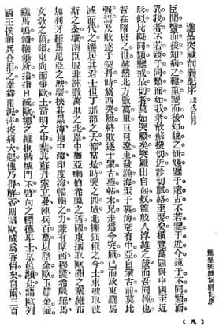

Türkler’in Zayıflaması (İmparatora Sunulan Rapor)42
1898 yılı Haziran – Temmuz ayı 43
Bildiğim kadarıyla bir hastalığın ağır olup olmadığını anlamak için doktora gitmek gerekir, (bunun gibi) elinde ayna varsa ancak güzel veya çirkin olduğunu anlarsın. Günümüzdeki olaylara bakmak tarihe bakmaktan, anlamaktan daha önemlidir, bize uzak örneklerle kendimizi karşılaştırmaktansa bize yakın örnekler ile karşılaştırmak daha iyidir. Bu sebeple, hastalığı anlamak için hastalığı iyice araştırmak gerekir. Ben birçok ülkeye gittim, bizim ile onları karşılaştırdım, (aralarında) bize en yakın olan44, bizim için örnek olabilecek en iyi tecrübeye sahip Türkiye’dir. Türkler Hunlar’dan45, Yin Hanedanı46 ve ChunWei’in47 soyundan gelirler, Bizim ile aynı köktendirler. Sui48 ve Tang dönemlerinde Kuzey’de (Çin’in Kuzeyinde) Binlerce Li alanı kontrol altına aldılar, Moğollar’dan önce bütün Orta Asya’yı kontrolleri altına aldılar. Qi Dan’lara49 yenildikten sonra Batı Göktürk ismini aldılar, Moğollar’ın Timur’u tarafından yenildikten sonra bugünkü Türkiye’ye50 geldiler. Doğu Roma’ya saldırdılar ve büyük başkentleri Konstantinapol’a yerleştiler. Bu dönemde büyük bir imparatorluk oldular, kuzeyde Rusya, doğuda Persler (İran), güneyde Afrika, ortada Eski Yunanistan, Avrupa’da Romanya dâhil Karadeniz, Akdeniz, Hind Okyanusu’nda güçlendiler, Eski Roma’nın sınırlarını kontrolleri altına aldılar, Avrupa’nın doğusunun tamamını ele geçirdiler. Ming Hanedanı döneminin ortasında Sultan Süleyman süvarileri ile bütün Avrupa’yı kontrolü altına almıştır. Viyana kapılarına kadar gitmişler ancak birleşik ordular51 ve yağan yağmur nedeniyle başarıya ulaşamamışlardır yoksa bütün Avrupa’yı yutmalarını kimse durduramazdı. Sonraki 300 yıl boyunca Avrupalılar Türk ismini duyduklarında yüreklerine korku salınmıştır. Ancak bu üç yüz yıl içinde Avrupalılar yeni teknikler geliştirmiş, Kolomb52 Amerika Kıtası’nı keşfetmiş, yeni bilgiler elde etmişler, İtalya’nın Rönesans’ının ardından, Protestanlık ortaya çıkmış, Descartes’ın53 yeni düşünceleriyle, maddecilik temelli yeni bir sanat ve yeni ürünler ortaya çıkmıştır. Türkler Moğollar’dan elde ettikleri toplar ve barut ile Avrupa’yı yenmiş ve uzun zaman devam eden feodalitenin 54de sonunun gelmesine neden olmuşlar, krallar güçlenmiş, büyük devrimler olmuş ve her ülke anayasasını yapmıştır.
Son birkaç yüzyılda, Avrupa’da siyaset istikrarlı bir hale gelmiştir, yeni yönetim biçimi, yeni bilim ve yeni makineler, eskiden olmayan şeylerdir. Onların demiryolları, trenleri, telgraf ağları, balonları bütün dünyaya yayılmıştır. Avrupalılar’ın bu yeni buluşlarını dünyada kullanmayan bir yer kalmamıştır. Türkler ise sadece güçlerine dayanmaktadırlar, hemen (Avrupalılar’ın) yanıbaşında derin bir uykudadırlar, yüzyıllar boyunca bunun farkına varamamışlardır, bu çok tuhaftır! Avrupalılar’ın gelişmelerine paralel olarak orduları da güçlenmiş ve yurt dışına da asker göndermeye başlamışlardır, (Türkler’in) yaşadıkları yerler 3 denizle çevrili çok bereketli topraklardır, ancak burada mücadelelerin sonu gelmemektedir. Avrupalılar buradaki halkları ayaklandırmıştır, Mısır, Yunanistan ve onlarla beraber Romanya ve Sırbistan bağımsız olmuştur, Bulgaristan isyanından sonra, Ruslar bunu bahane ederek ordu göndermiştir, binlerce Kazak55 askerini yollamışlar, Ba Da Kan56 dağının en üstüne kadar ele geçirmişlerdir, buradan bütün Konstantinapol görülebilmektedir. O sırada Türk imparatoru ve üst düzey memurlar ülkelerinin sonunun geldiğini düşünmüşlerdir, İngilizler Ruslar’ı durdurmak için, Fransızlar’la, İtalyanlar, Almanlar ve Avusturyalılar’ın ordularıyla Ruslar’ın geri çekilmesini sağlamışlardır. Bu ülkelerin tamamı güçlü ülkelerdir, sonra da bu toprakları paylaşmışlardır, Ruslar Karadeniz’i ve Kafkasya’yı Avusturya Hersek’in iki eyaletini, İngilizler Mezopotamya’yı57 almış; Karadağ58 bağımsızlığını kazanmıştır, Türkiye küçülmüş bu nedenle geçici bir huzur tesis edilmiştir, ülke bu sırada az kalsın tamamen ortadan kalkmanın eşiğine gelmiştir. O dönemde dahi bir sadrazam olan Midhat Paşa sayesinde anayasa ilan edilmiş, kanunlar yenilenmiş ve yeni bir diplomasi tesis edilmiştir. Ülkesinde güvenliği yeniden tesis etmiştir, halk da memnun olmuştur. Eğer Türk sultanı Midhat Paşa’yı dinlemiş olsaydı, Türkler güçlü ordularının da yardımıyla, bu reformlarla ülkelerini güçlendirebilir, 20 yıl içinde Fransa, Almanya, Avusturya ve İtalya ile aynı noktaya gelebilirdi. Ancak Türk Sultanı Midhat Paşa’yı sürgüne göndermiş, anayasayı askıya almış, eski yönetim tarzına dönmüş ve Türkler karanlığa gömülmüştür. Topraklar ekip biçilmemekten sarı otlarla kaplanmıştır, bizim ülkemizle aynıdır, yollar kirlidir, bizim ülkemizle aynıdır, su tesisatı yoktur, kanalizasyon yoktur, elektrik yoktur, makine yoktur, bizim ülkemizle aynıdır, ülkede çok az demiryolu vardır, telgraf ve ulaşım zayıftır, bizim ülkemizle aynıdır, halk çok eski düşünceleri devam ettirmektedir, dini kitaplardan başka bir şey okumazlar, dünyanın gelişmesinden haberleri yoktur, okullarda dünya ile ilgili bir ders yoktur, kimya, elektrik, ağır sanayi, mühendislik, makine dersleri ve bölümleri yoktur, ticari gemi kaptanlığı yoktur, bu bizim ülkemizin öğrencilerinin Klasik Çince yazılar yazmalarıyla aynıdır, halkın hiçbir hakkı yoktur, meclis yoktur, yerel meclisler yoktur, seçim yoktur, bizim ülkemizle aynıdır, maliye kargaşa içindedir, halk atlar ve inekler gibi çalışır, bizim ülkemizle aynıdır, mahkemeler sık sık kesilir, hapishaneler berbat durumdadır, bizim ülkemizle aynıdır, dış borçları çoktur, bizim ülkemizle aynıdır, İngiliz, Rus, Fransız, Avusturya ve İtalyan büyükelçileri iç işlerine karışmakta gün geçtikçe baskılarını artırmaktadırlar; halk çaresizdir, bizim ülkemizle aynıdır, halk arasında isyanlar çoktur, herkes imparatoru değiştirmek istemektedir. Ama Türk sultanı ve onun eski karanlık yönetim biçimi devam etmektedir fakat o artık Avrupa’nın güçlü ülkelerince kuşatılmıştır, halkın üzerinde rahatça uyumaktadır, işte bu adeta barut fıçısının üzerinde veya kaplanların yanında uyumak gibidir, kaplanın yanında rahatça uyumak ve kaçmaya çalışmamak gibidir durumu! Türkiye yıkılmak istemiyorsa devrimden başka çaresi yoktur, sadece topraklarını küçültmekle kurtulması mümkün değildir!
Kitap der ki: “Kanuna göre ve düzenle yönetilenler, mutlu; Kanuna uymayan ve kaos ile yönetilenler ise mutlaka yok oldu.59” Osmanlı ve Çin de aynı durumdadır, Batı Avrupa uzun zamandır ikisini doğunun “Hasta Adamları” olarak görmektedir, hangisinin önce öleceği belli değildir. Günümüz Çin’i ve Osmanlı’sı her bakımdan aynıdır, Çin’in hastalığı Osmanlı’nın da hastalığıdır. Ben Türkler’in durumunu görünce bizim de aynı tehlikeyle karşı karşıya olduğumuzu düşünüyorum. İmparatorumuz reformlar yapmak, anayasa ilan etmek istemektedir, hastalığı ve tedavisini bilmektedir. İşte bu noktada Türkler’le ayrılmaktayız.
Memurunuzun Osmanlı’nın durumunu size bildirmesinin nedeni, bizim de aynı sorunlarla boğuşmamızdır, bu imparatorumuza bir örnek oluşturabilir, yeni politikalar uygulamalı ve bir anayasayı yürürlüğe koymalıyız; böylece hasta ayağa kalkacaktır, (Türkler’in yaptığı hatayı yapmayarak) Türkler’den farklı olabiliriz. Böylece Çin yıkılmaz, halkı köle durumuna düşmez, imparatorumuz hüküm sürmeye devam eder.
Kang You Wei yazmıştır.

42 进呈 imparatora sunulan yazılar için kullanılan bir ifadedir.
43 戊戌五月, geleneksel Çin takviminde bu tarih 19 haziran – 18 temmuz 1898 tarih aralığına denk gelmektedir.
44 比拟同类
45 匈奴
46 殷朝 Shang Hanedanı 商朝olarak da bilinir; M.Ö. 1766 – 1122 yılları arasında Çin’de hüküm sürmüş hanedan.
47 淳维, M.Ö. 1600 – 1046 yılları arasında Çin’i hâkimiyeti altına alan Xia hanedanının son hükümdarının oğlu. Çin kaynaklarına göre kuzeye giden Chun Wei Hunlar’ın atasıdır.
48 Sui Hanedanı, 581 – 619 tarihleri arasında Çin’i hâkimiyeti altına alan hanedan.
49 Qi Dan 契丹, Kitay ya da Khitan olarak da bilinen 4. yüzyıldan itibaren Çin’in kuzeyine hâkim olan göçebe bir halk.
50 Kang, burada da “Tu Jue” Türk ya da Göktürk ismini kullanmaktadır.
51 Burada kast ettiği Avrupa’dan birleşerek gelen feodal beylerin ordularıdır.
52 科仑布
53 苗卡儿
54 Çince’de “Feng Jian” “封建” olarak tanımlanmaktadır. Avrupa’daki feodalite’ye karşılık gelmektedir.
55 可萨克
56 巴达坎
57 毛鲁塌布加利亚
58 门的内哥
59 Kang, burada kadim Çin kitaplarından olan “Shang Shu” “尚书” içinde geçen bir söze gönderme yapmaktadır. Klasik Çince metinlerde “Shang Shu” yerine sadece “Shu” “书” yani “Kitap” sözcüğü kullanılır.